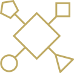
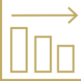
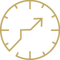

Diversifierad
Vi investerar inte majoriteten av vårt fondkapital i aktier utan kombinerar olika tillgångslag för maximerad riskspridning.

Stabil
Vår modell erbjuder stabil utveckling oavsett marknadsläge eller konjunktur.

Långsiktig
Ett långsiktigt alternativ för dig som värdesätter trygghet och lägre risk än en typisk aktiefond som gör att du kan sova gott om natten.